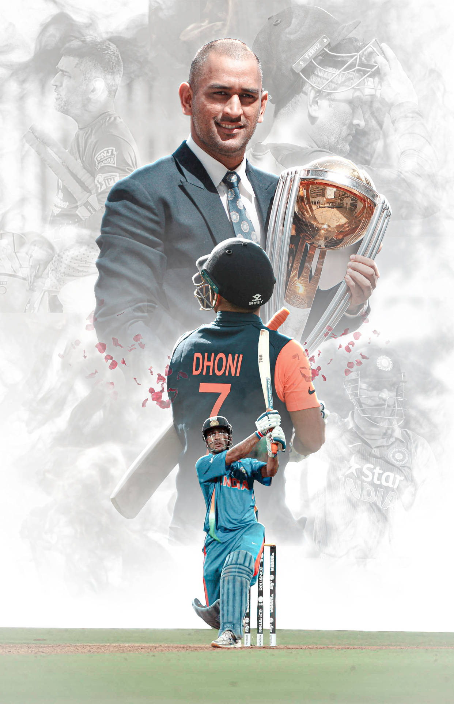

MS Dhoni The Untold Story
About Him
Mahendra Singh Dhoni who was born on 7 July 1981 is a former Indian cricketer who played as a wicket-keeper-batsman. Widely regarded as one of the greatest captain of all time and is known for his explosive batting, wicket-keeping and leadership skills.

Interesting facts
- He used to work for the Indian railways before he began playing professional cricket.
- Cricket wasn't always his calling— Dhoni also experimented with football and badminton.
- He is the only player to have won the ICC ODI Player of the Year award twice.
- The cricketer has also earned title of ‘Lieutenant Colonel’.
- MS Dhoni's trademark ‘Helicopter Shot’ was taught to him by his former teammate and close friend.

Works and Achivements
- Dhoni has been the captain of the Chennai Super Kings (CSK) in the Indian Premier League (IPL) since the inception of the league in 2008. Under his leadership, CSK has won multiple IPL titles, making it one of the most successful franchises in IPL history.
- Dhoni is renowned for his leadership and captained the Indian cricket team from 2007 to 2016. Under his captaincy, India achieved numerous milestones, including winning major ICC tournaments
- Dhoni holds the record for the most stumpings by a wicketkeeper in international cricket.
- His leadership style and success as a captain have had a significant impact on the way cricket is played and led in India.
- Mahi has received numerous awards and honors for his contributions to cricket, including the Padma Bhushan, Padma Shri, and Rajiv Gandhi Khel Ratna award.